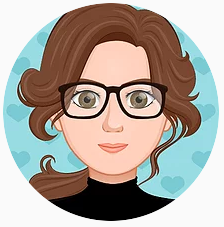

Hi
| Agathe Catechis | Amanda Grivej |
| President | Vice President |
| Heyo! It's me, Agathe, your president for the 2020-2021 academic year. I first joined in my sophomore year and in my junior year I was elected as president. I'm the director of CAD (computer-aided design), where you make 3D models of anything you can quantify. Last year and this year I've been on the Robotics team, where I was a member of the CAD subteam.(I'm very proud of making a dual Falcon motor gearbox there. Feel free to ask me about it.) This summer I took a Cooper Union Drafting and Design for Engineering class where I learned about how finance, business, and engineering all meld together in industries. This year we're aiming for an end-of-year project we can all look forward to. My main goal this year is to make ModIT a club where you can enjoy learning about the tech of the future! Feel free to reach out to me or anyone on the board if you have questions, ideas, or just want to talk! I look forward to seeing y'all! :3 | Hello! I'm Amanda and I'm the vice president of the club. I'm also in charge of sharing the joy of coding with you. I ended up becoming interested in coding when I joined the school's robotics team and learned about their software engineering section. I soon fell in love with coding, and began with learning Java. I hope to also inspire you to love coding as I do and become interested in pursuing it later on. I wish to work together with you all and learn together as one so that everyone feels welcome. If you have any questions or anything you want to talk to us about, feel free to reach out and I'll gladly get back to you. I can't wait to see you all and work together with you!! |
|  | ||
| Sonia Hasko | Angelina Li | Nidhi Mahadevan |
| Social Media Manager | Secretary | Treasurer |
| Hi! I'm Sonia Hasko and I am very excited to be your social media manager for the 2020-2021 school year. My goal is to reach more people by publicizing ModIT's work, ultimately showing students that learning computer science can be fun! I will prioritize access to free, easy-to-use resources and hope to improve communication between members and leaders. I want every person in ModIT to feel like they belong, so I am here for any questions and/or concerns you may have! | Hello! I am Angelina, the secretary of ModIT. My vision is to create an organized, productive, and stress-free environment by creating a schedule to keep our club on track. I am also the director of code! I unintentionally stumbled upon the computer science world when I took APCSA (Java) in my sophomore year. It was an overwhelming challenge, but it was worth it to gain a new skill that I may implement in a future career. Whether you are seeking to gain/practice a new STEM skill, find a new passion, or explore your comp sci interest deeper, I hope that ModIT will be a community for you to do so. If you ever feel overwhelmed about your work, I'm always free to talk! I am here for you <3 | Hi! My name is Nidhi Mahadevan, and I will be your treasurer for the 2020-2021 school year. I am also the director of Data Analysis. This past summer, I learned how to use R through an internship at the Memorial Sloan Kettering Cancer Center and suggested adding it to ModIT. While my role as treasurer will be limited because of the current learning model, I still want to ensure that everyone has the best experience possible, so feel free to reach out if you have any questions! |